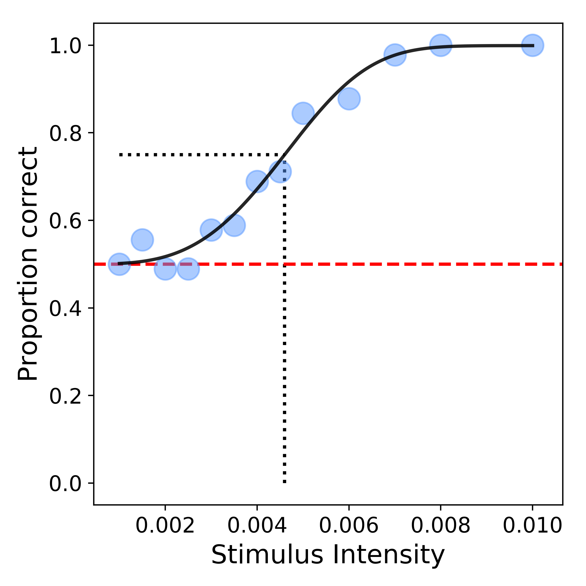

Basic Usage Example¶
After Bayesfit is installed on your system, we are ready to get started fitting psychometric functions to data using the module. The first examples here will demonstrate the basic usage of Bayesfit
We start by import the Bayesfit module into our workspace:
import bayesfit as bf
Next, ensure that you have your data formatted according to required format which is a M-row by 3-column Numpy array, such as:
| Stimulus intensity | N-trials correct | N-trials total |
|---|---|---|
| ... | ... | ... |
Example 1 : Maximum Likelihood Estimation (MLE)¶
The simplest procedure for fitting a model to data is to simply pass data to the fitmodel function. However, at a minimum, you will also likely want to include the argument specifying the N-alternatives possible during the experiment. For this example, let us assume a 2AFC task.
Therefore, a minimal working example would be:
data = [M x 3 ndarray]
metrics, options = bf.fitmodel(data, nafc = 2)
And that is it! After a short while, the module should output two variables which correspond to metrics from the fitting procedure, along with the options used to fit the model. Both these variables are dictionaries, and their full description can be found on the main page under the section for the fitmodel function.
We can now visualize our estimated psychometric function fit to our data using the plot_psyfcn function:
>>> bf.plot_psyfcn(data, options, metrics)
which produces a plot that looks like this:
{kind=link}
Example 2 : MLE with additional options¶
While the minimal working example is great, it leaves many options to be desired. One important consideration is determining which parameters should be estimated, and are considered free versus fixed, during the fitting procedure. We will also provide fixed values for gamma and lambda parameters in the model.
Let us also specify which sigmoidal function to fit to the data, and decrease the density of the grid used to estimate parameters:
# List of logical arguments which correspond to: scale, slope, gamma, lambda
param_free = [True, True, False, False]
# List of float arguments for estimates of parameters: scale, slope, gamma, lambda
param_ests = [None, None, 0.45, 0.05]
# Specify sigmoid type
sigmoid_type = 'weibull'
# Define density of grid
density = 50
# Fit model to data
metrics, options = bf.fitmodel(data, param_free = param_free, param_ests = param_ests, sigmoid_type = sigmoid_type, density = density)
Example 3 : Bayesian Inference¶
The previous examples used only maximum likelihood estimation as the main procedure to estimate parameters, as no priors were provided. Therefore, to make the fitmodel function perform bayesian inference, we need to provide definitions for our priors for each of our parameters.
The full documentation for the prior distributions, and the correct formatting to use can be found under the section for the fitmodel function. It is important to note that the list must contain four arguments, although NoneType can be used for parameters where a prior is unwanted.
Here, we define prior distributions for the parameters that control the scale and slope of our cumulative normal function:
# Define cumulative normal function to use as sigmoidal function
sigmoid_type = 'norm'
# List of logical arguments which correspond to: scale, slope, gamma, lambda
param_free = [True, True, False, False]
# Define priors for scale and slope parameters (here mu, and sigma)
priors = ['Norm(0.3,2)', 'Norm(20,2)', None, None]
# Fit model
metrics, options = bf.fitmodel(data, param_free = param_free, priors = priors, sigmoid_type = sigmoid_type)
We can now plot the poseterior surface for the scale and slope parameters (collapsed across gamma and lambda):
bf.plot_posterior(metrics)
{kind=link}
The marginal distributions can als be viewed via:
bf.plot_marginals(metrics)
{kind=link}
Last, we can view the priors that we used during our fitting procedure via:
bf.plot_priors(options, metrics)

Example 4 : Batch fitting¶
The only major difference for batch fitting data compared with single datasets is the type of argument input into the fitmodel function. Instead of a M x 3 ndarray, each dataset will need to occupy its own key within a dictionary object as an ndarray.
Therefore, if we had two datasets, we would need to construct a data object for batch fitting as follows:
# Datasets in usual format
data_01 = [M x 3 ndarray]
data_02 = [M x 3 ndarray]
# Construct new dictionary to store datasets
data = dict()
data['data_01'] = data_01
data['data_02'] = data_02
Now simply feed this dictionary to the usual fitmodel function except flag the batch argument as True:
bf.fitmodel(data, batch = True, nafc = 2)
Important: when batch fitting data, parameter estimates must be autogenerated by Bayesfit unless the parameter is fixed. So, in a definition such as (assuming the first two parameters are free):
# Specify which parameters are free
param_free = [True, True, False, False]
# Define parameter estimates
param_ests = [0.005 5 0.5 None]
The first two parameters estimates provided by the user would not be used. However the fixed parameter estimates would be used when fitting the model.